Fensterbank mit Lamellenwand
Eine breite Fensterbank aus Eiche zum Sitzen und Arbeiten, darunter Laden, daneben eine Wand aus senkrechten Lamellen. Das Lüftungsgitter für die Heizung ist in die Platte eingelassen.
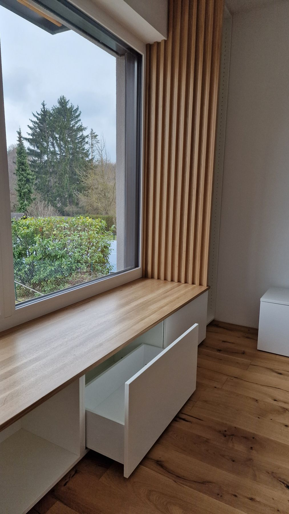
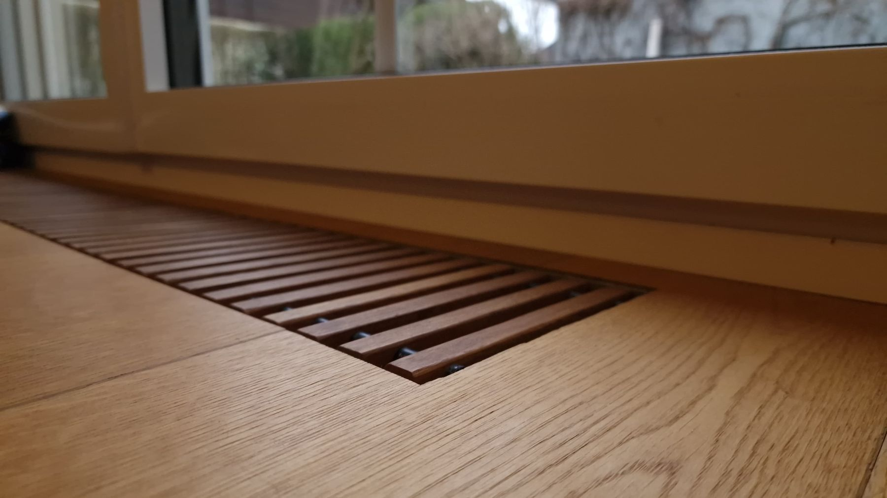
Eine Auswahl unserer Arbeiten aus Wiener Wohnungen. Neue Fotos aller Projekte entstehen gerade mit einem Fotografen.
Eine breite Fensterbank aus Eiche zum Sitzen und Arbeiten, darunter Laden, daneben eine Wand aus senkrechten Lamellen. Das Lüftungsgitter für die Heizung ist in die Platte eingelassen.


Fronten aus dunkel gebeiztem Holz mit Messingknöpfen, offene Rundregale am Ende der Zeile und eine helle Arbeitsplatte.
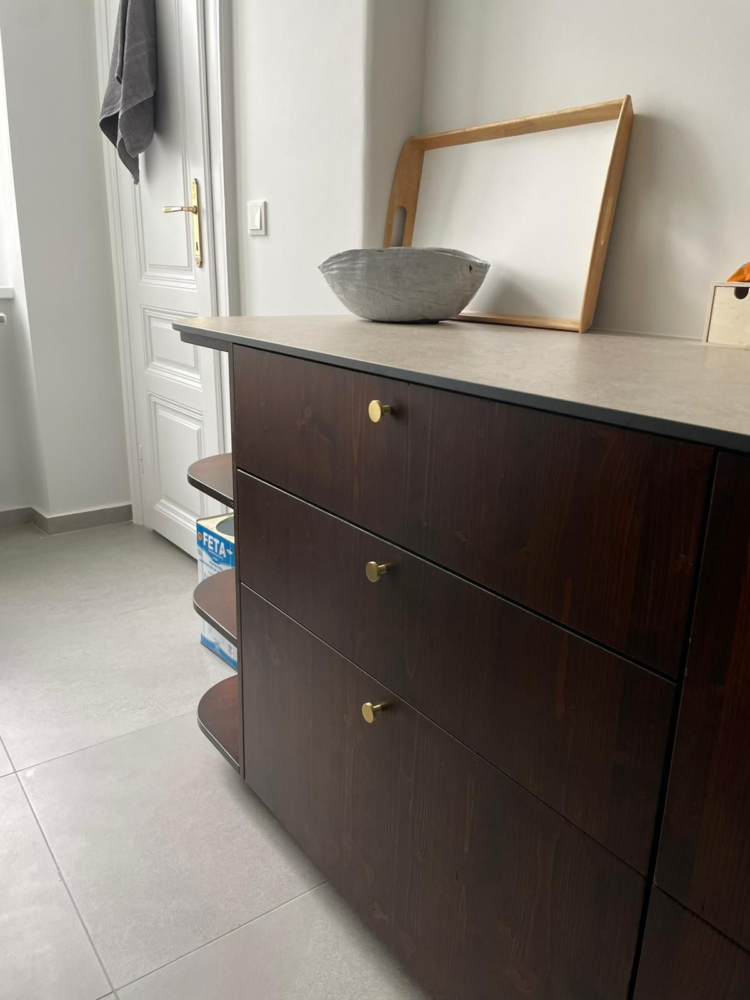
Ein Bett auf einem Podest: vorne große Laden mit Griffmulden, seitlich zwei Stufen mit eigenem Stauraum, an der Rückseite offene Fächer. Gerade in der Werkstatt, die Fotos vom fertigen Bett folgen nach der Lieferung.
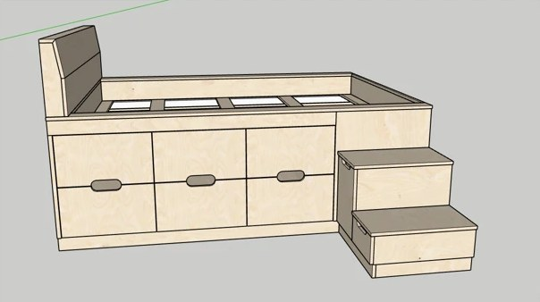
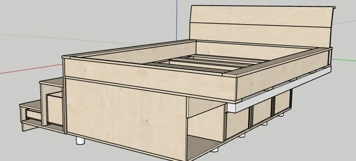
Entwurfszeichnungen. Fotos des fertigen Betts folgen.
Ein raumhoher, grifflos weißer Einbauschrank für den Vorraum, daneben ein hängendes Wandregal aus Eiche.
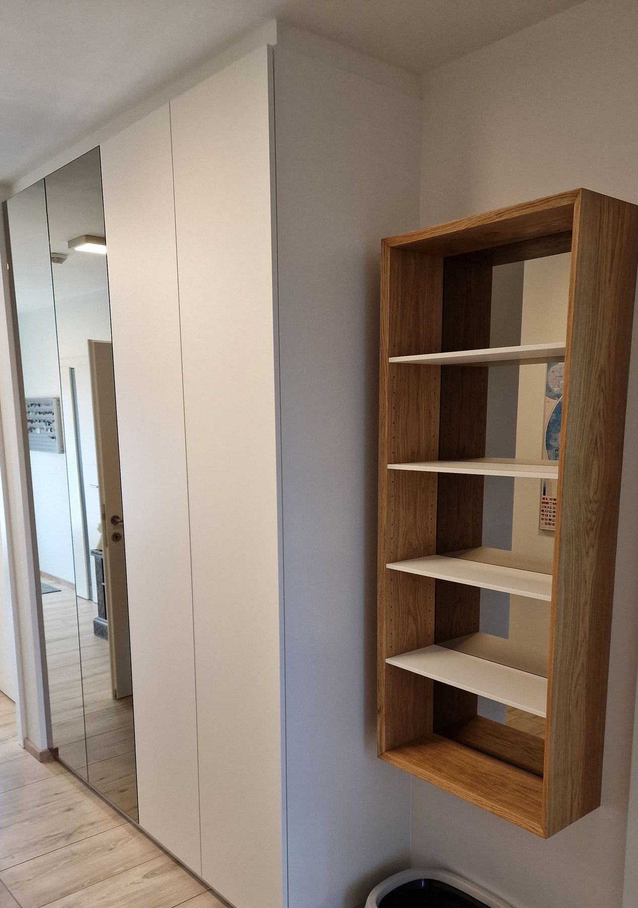
Ein schmaler Schrank, der eine Lücke neben dem Heizkörper nutzt. Hinter der Tür liegen vier Schubladen aus Eiche, an den Ecken mit Fingerzinken verbunden.
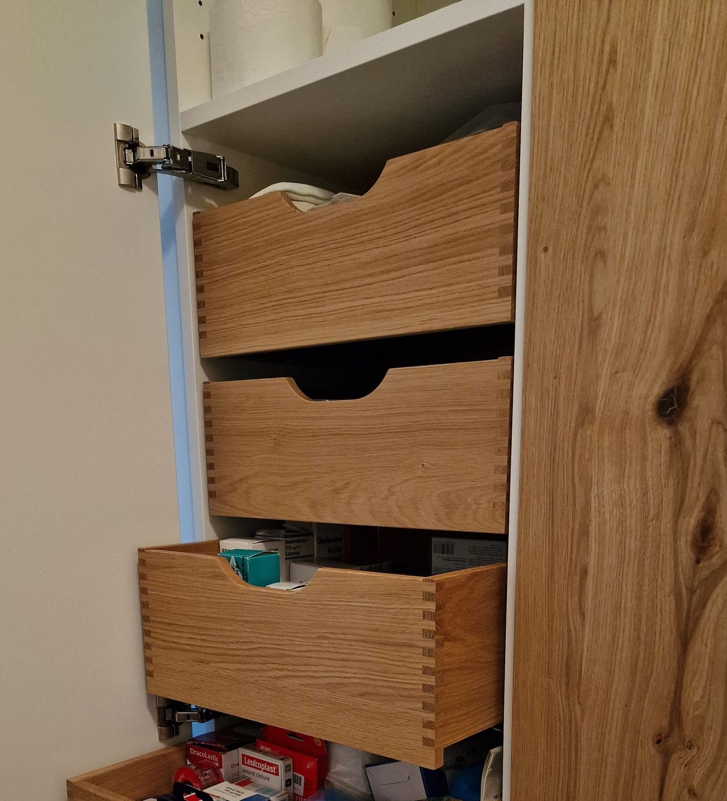
Regalböden, die der Schräge folgen, und so den Raum nutzen, den kein fertiges Möbel erreicht.
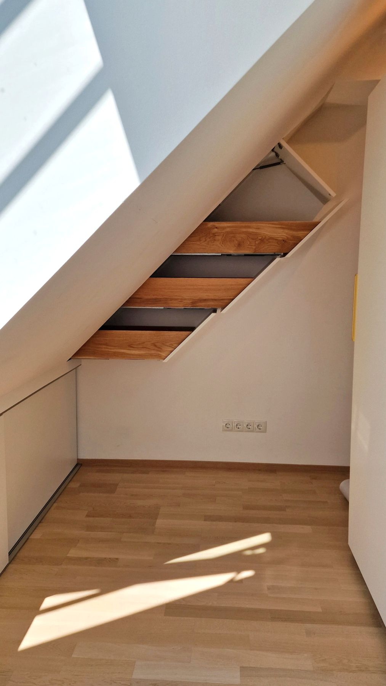
Das Meisterstück von Christian Vetö. Schubladen mit Griffmulden, offene Fächer für Bücher und Spiele, die Ecken gezinkt.
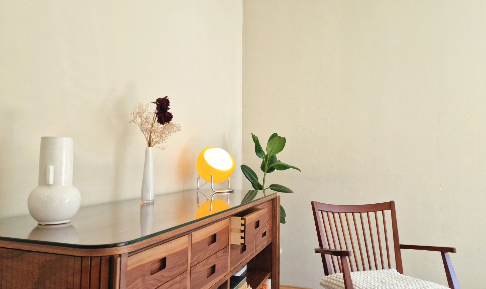
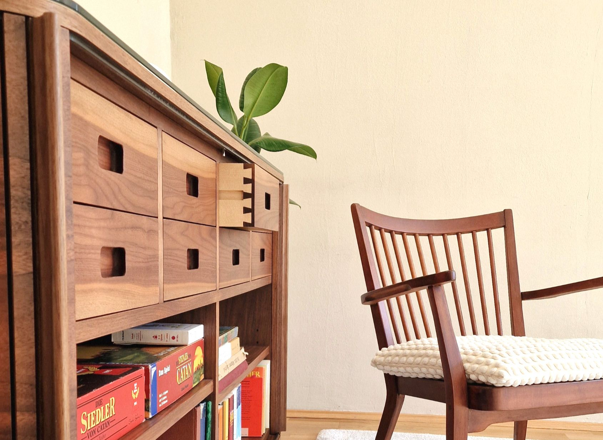
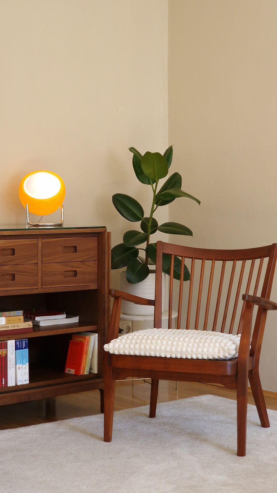